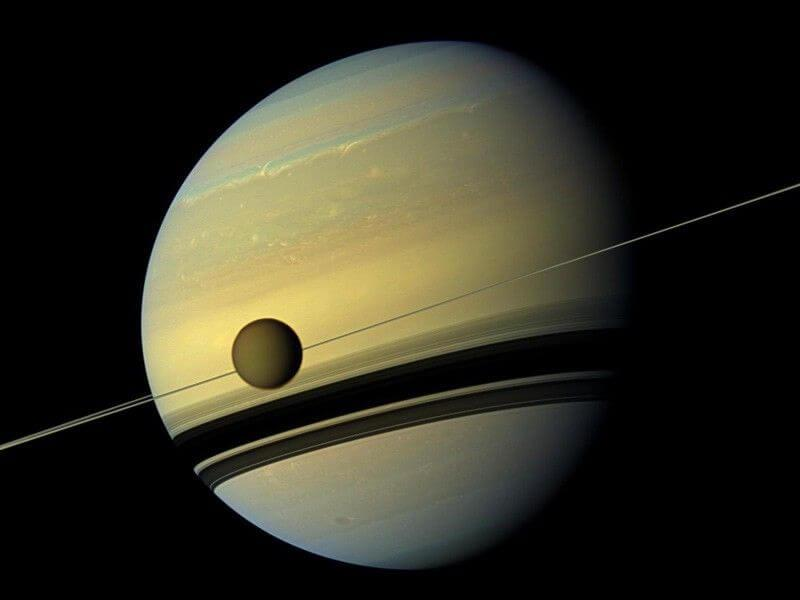
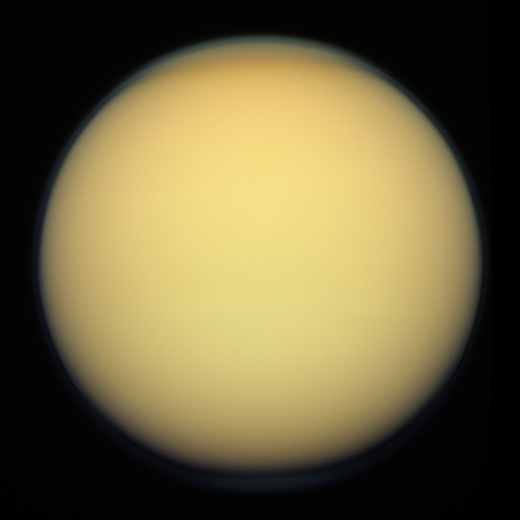

Facts about Saturn!
- Saturn is the 6th planet from the sun and the second-largest planet in our solar system, after Jupiter.
- It is a gas giant, primarily composed of hydrogen and helium, with a small rocky core.
- Saturn is famous for its extensive ring system, which is made up of countless particles of ice and rock, ranging in size from tiny grains to large chunks.
- The planet takes about 29.5 Earth years to complete one orbit around the Sun


MOAR facts about Saturn
- Saturn has at least 82 moons, with Titan being the largest and most well-known.
- The planet has a very low density, which means it would float if placed in a large enough body of water.
- Saturn's atmosphere is known for its strong winds and storms, including the famous hexagonal storm at its north pole.
- The planet has a faint ring system, which is not as prominent as Saturn's rings.
- The planet emits more heat than it receives from the Sun, due to the slow contraction of its interior.